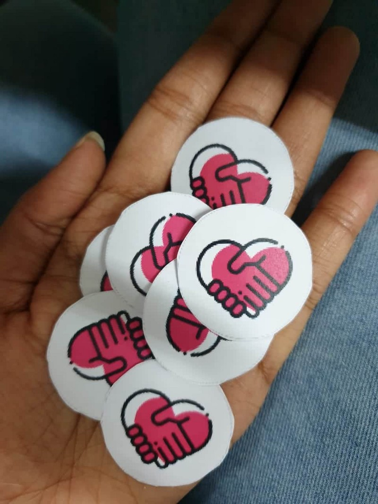

How I started thinking like a Designer.

This was during a Winter school I attended on UX Design when all the attendees were asked to solve a real-world crisis using the methods they were teaching us. We were divided in the team of 4. My team had Mrudhvika a back-end developer, Ritwick the engineering fresher and Rajesh a product manager. We all had some experience in designing pretty screens for apps and websites but this was something new and that got us all excited.
Getting down to the task we started listing all the problems we faced in our everyday lives. Our discussions varied from the tiring daily commute of the metro that Rajesh face to the strict attendance policy I and Ritwick have in our colleges.

We instantly started thinking the solution to these problems 90% of which had an app or a website as a solution. When we went to our mentor with this bunch of amazing solutions that we had in our mind And expected a “Woaahh! You guys are geniuses” he blocked us off by saying “I don’t want to know the solution, Tell me more about the problem.” And that’s when we realized
Work more on the problem, Even if it means devoting a huge amount of time to it. Once you know the exact problem the solutions will come naturally.
The first big task was to decide on a problem area, to begin with. Just as we were scratching our brains to find the perfect problem, Mrudhvika started telling us about the problems she faces during menstruation and how she has to carry a tampon. This interested us all because we knew so little about periods. And Menstruation being a taboo issue there’s not much work being done in those directions.
For starters, Here is a Manly Guide to Menstruation. This beautifully written piece by Mike LaVigne explains it all.
Research
We started our research with the ‘unavailability of tampons’ as an issue in hand.
Now was the time to get the users involved and know more about their problems, the ways they are dealing with it. This was a challenge for us because menstruation being a taboo, women weren’t so open in talking to us about their issues. So we had to come up with ways of gathering the data.
We wanted to gather the data of a varied user base. Mrudhvika, being the only girl in the group went ahead and did the user interviews. We also prepared a questionnaire and floated a google form in our network. We gathered the data from the users of the age of 12 to 55.
The research, however, brought quite interesting results ahead, kicking the problem we thought the user had out of the scene. We thought the ‘unavailability of tampons’ was the major issue. But based on the results we came to know that they used to carry sanitary pads during their periods it wasn’t much big of a deal. ‘The main issue was, however, the availability of pads if they had their periods before or after the expected date.’
The menstrual cycle consists of 28–35 days. The flow lasts for about 3–5 days at the beginning of the cycle. Women are generally aware of these dates and hence they carry a sanitary pad. But often due to stress and other factors, irregular periods are common. An irregular period is the one which occurs before or after the expected days of the flow.
Based on the data collected by user interviews about how do they deal with the problems related to irregular periods we did affinity mapping. We sorted them according to their age groups.
This helped us realize the common links of how women from different age groups approach the problem and how do they go about solving it.

We clubbed the common links together and realized that a lot of them tackled the problem of irregular periods by borrowing a tampon from their friends. The results from the google form that we floated also indicated the same.
According to a survey conducted by World Health Organisation (WHO) as many as 67 percent women have had to borrow a a sanitary essential from a friend, colleague or a family member.
Define
A lot of women always asked for a sanitary product at the time of need. So instead of redefining the wheel, We just decided to make this experience a better one. Hence we began identifying the pain points in the existing methods.
Also, we decided to narrow our user base down from to the age of 18–30 years old. Because we had a lot of data gathered around them and hence we knew them better.

Pain points
To explore the vertical, We dived further to know more about the specifics of the problem.
I always text my friend, If I want to ask her an extra. It’s so embarrassing.
A majority of the users we interviewed had to say the same thing. They were always hesitated to ask for a sanitary pad.
I have to be aware of my surroundings, It’s always difficult in front of boys.
We decided to explore the roots of this problem.
Ideation
My team then gathered around the table and we started discussing, shooting random ideas and hearing the user interview tapes over and over again understanding the users, sensing their tone.
Imagine a world where no Men exists at all, A world full of women. Will the women hesitate to ask for a tampon?
This gave us a lead that one of the major problems of the discomfort is the lack of knowledge among the men about menstruation.
#1. So ignorance amongst Men was an issue.
Let’s take a step back, If the problem is unavailability of a tampon during irregular periods, Why don’t we make the users carry a pad every day? This made sense.
#2. We could cultivate a habit amongst the users to carry a pad every day.
Solution
Now, knowing exactly what to solve we again started brain-storming finding ways to tackle the pain-points. We restricted ourselves from thinking about apps and websites at first.
All of us coming from an engineering background always thought more of the complex solutions, of how we could make an app or a portal? But sometimes the solution is much simpler and trivial. We just have to look for it.
To tackle the ignorance amongst the men we thought of various ways that could help us solve the issue.
Use of a badge on the bag.
As our user base was from 18–30 years of age most of them were either college students or working professionals. We designed a badge for the bag. If the user is carrying a sanitary pad with her, she will put the badge. This would act as a signifier for other women in need of tampons. The badges would create a buzz amongst the men and when they see every woman putting it up, They would get used to the fact and this will curb the ignorance to some extent. The badge would also remind her to carry a tampon.

A special compartment in the bag.
We could have a special compartment in the bag for the sanitary pad. Using suitable sensors we could detect whether the pad is present or not. If the compartment is empty the user would be alerted using a mobile notification. Women already use various apps to keep a track of their cycle, We could easily integrate this feature within them.
Pad share.
We thought of this App concept. It’s basically Uber for tampons. If the user is in need of a tampon she will get to know the people near here carrying an extra pad. She could then request a pad to the nearby user. The women on delivering it get karma points.What did I learn?
# You are not the user
All the projects I worked on earlier, was me having a problem and then building a solution around it. This was the first time I was designing something that I would never use. This taught me a great deal about not making assumptions and validating each step with the user.
# Fall in love with the problem
I still remember Mrudhvika calling me at 3 a.m and blabbering about this one woman she met facing the same problem. We were obsessed with this problem. And each user interaction leading to something meaningful would excite us all.
# Don’t ask directive questions
Initially, We went wrong with the form and asked some questions which had leading answers and then we had to compensate by working more hard on the user interviews. This article by Emily on How To Ask User Experience Questions is a gem.
# When stuck, Zoom out
This happened a lot during brainstorming sessions we would get all enthusiastic shooting ideas, building on each other’s thoughts, modifying every bit. We would hit a dead-end. Then backing up 10 steps and zooming out helped us realize what is the actual problem that we are trying to solve. And that would surprisingly get us back on track.

Thanks for the read üòä If you enjoyed reading, Don‚Äôt forget to clapüëè You can get in touch with me at vinitmankar@gmail.com or follow me on Behance, Instagram, Twitter.